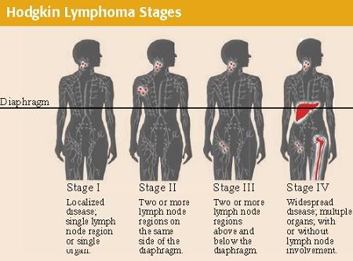
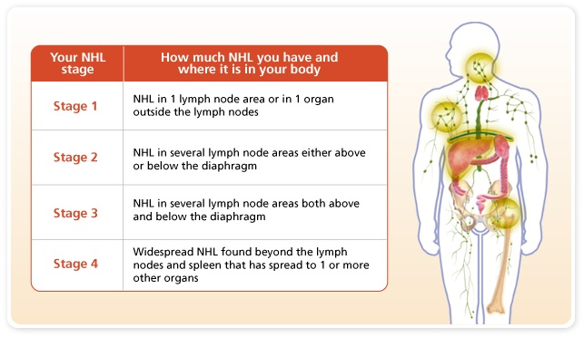

There are dozens of subtypes of lymphomas.The two main categories of lymphomas are Hodgkin lymphomas (HL) and the non-Hodgkin lymphomas (NHL).
,p>The staging does not take into account the grade (growth rate) of the tumor tissue, or prognostic factors, such as bulky disease, LDH, age, symptomatic.Bone marrow involvement and other so-called extranodal involvement is not unexpected for lymphoma can be reversed with treatment.
Stage I - disease in single lymph node or lymph node region.
Stage II - disease in two or more lymph node regions on same side of diaphragm.
Stage II contiguous means two or more lymph nodes in close proximity (side by side). Stage III - disease in lymph node regions on both sides of the diaphragm are affected.
Stage IV - disease is wide spread, including multiple involvement at one or more extranodal (beyond the lymph node) sites, such as the bone marrow (which is involved commonly), liver, pleura (thin lining of the lungs)
